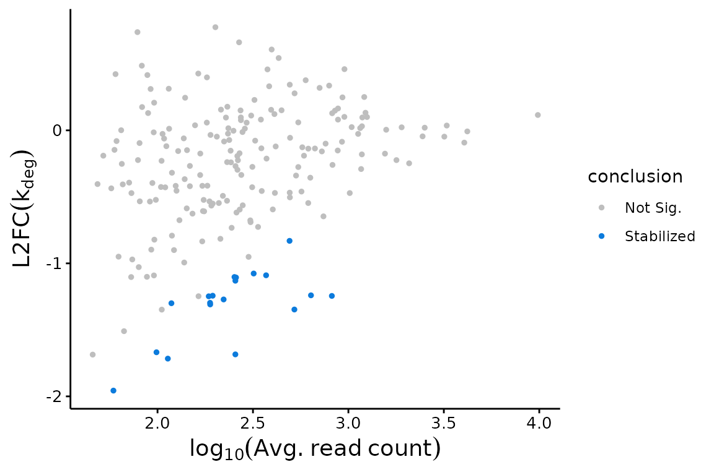
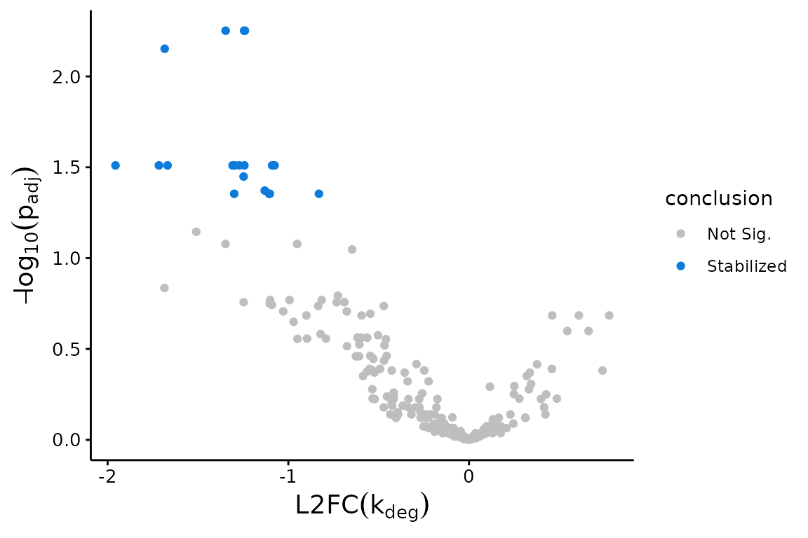
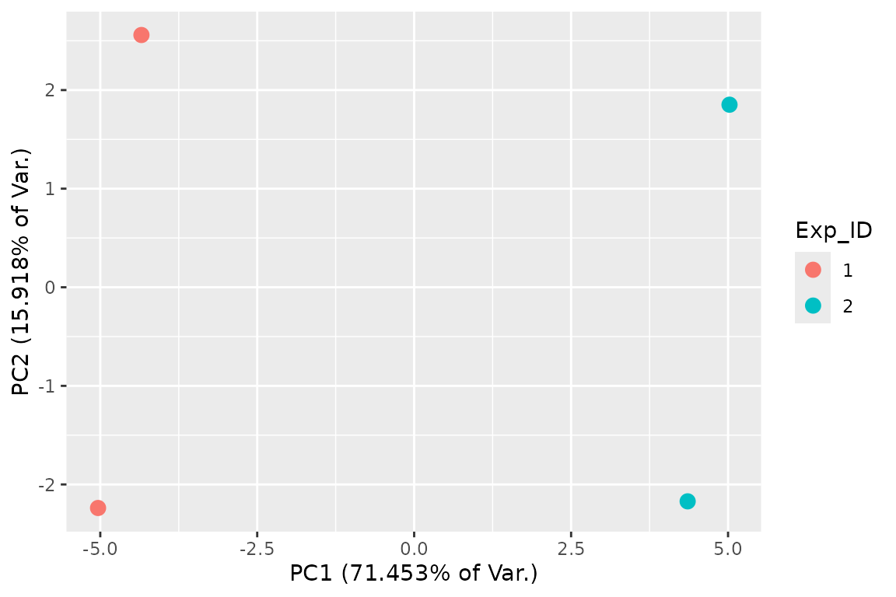

Abstract
As of bakR version 1.0.0, you can now provide a table of fraction new estimates as input. Tools like GRAND-SLAM provide such tables, though you can also use your own pipeline for estimating the fraction of reads that are new in your NR-seq experiments. In this vigngette, I will provide a brief introduction to how to use this type of alternative input in bakR. An Appendix at the end of this vignette will go deeper into some specifics regarding input data structure and analysis strategies.
Step 1: Creating a bakRFnData Object
The 1st step to using bakR with fraction new estimates as input is to
create a bakRFnData object. A bakRFnData object consists of two
components: a fns data frame and a metadf data frame. fns stands for
“fraction new estimates” and contains information regarding the
estimates for the fraction of sequencing reads from a given feature that
were new in a given sample. metadf stands for metadata data frame and
contains important information about the experimental details of each
sample (i.e., how long the metabolic label feed was, which samples are
reference samples, and which are experimental samples). Examples of what
these data structures are available via calls to
data("fns") and data("metadf"), for the fns
data frame and metadf respectively.
A fns data frame consists of rows corresponding to fraction new estimate information for a given feature. In particular, there are 4 required (and one optional) columns in the fns data frame:
- sample: This is the name of the sample from which the reads described in this row originated. Usually this will be some sort of character vector that you have defined.
-
XF: Name of the feature (gene, exon, etc.) that the
read comes from. Kinetic parameters will be estimated for each feature,
so this should represent the functional unit who’s metabolic kinetics
you are interested in.
- XF stands for “exonic feature”, since in most cases you should only be considering reads that map to definitively exonic locations. Introns are typically rapidly turned over and thus will be highly labeled species that will bias estimates of mature transcript stability.
- fn: Estimate of the fraction new
- se (optional): Uncertainty in fraction new estimate
- n: Number of reads from the feature/sample combination represented in this row.
The metadf data frame is described in both the “bakR for people in a hurry” and “Differential kinetic analysis with bakR” vignettes.
One route by which to obtain the fns data frame is via GRAND-SLAM, an efficient and user friendly tool developed by the Erhard lab which implements a binomial mixture model originally described by our lab. GRAND-SLAM outputs a table named run_name.tsv (where run_name is whatever you specified when running GRAND-SLAM), which can be quickly converted to a fns data frame. You can then create a bakRFnData object as follows:
# Load GRAND-SLAM table and metadf
data("GS_table")
data("metadf")
# Create fns data frame from GRAND-SLAM output
fns <- GSprocessing(GS_table)
# Create bakRFnData object
bfndo <- bakRFnData(fns, metadf)Step 2: Fitting the Efficient Model
After creating the bakRFnData object, you must first run bakR’s most efficient implementation (the MLE implementation from the bakR manuscript).:
# Run the efficient model
Fit <- bakRFit(bfndo)
#> Mapping sample name to sample characteristics
#> Filtering out low coverage features
#> Processing data...
#> Estimating read count-variance relationship
#> Averaging replicate data and regularizing estimates
#> Assessing statistical significance
#> All done! Run QC_checks() on your bakRFit object to assess the
#> quality of your data and get recommendations for next steps.bakRFit() is used here as a wrapper for two functions in bakR:
fn_process() and fast_analysis(). For more details on what these
functions do, run ?fn_process or
fast_analysis.
When using fraction new estimates as input, only one of the two more highly powered implementations may be used (the Hybrid implementation from the bakR manuscript). You can run this as follows:
# Run Hybrid model (This might take several minutes to run)
Fit <- bakRFit(Fit, HybridFit = TRUE)The Fit objects contain lists pertaining to the fits of each of the models. The possible contents include:
- Fast_Fit: Result of the initial fitting of the bakRData object. To learn more about its contents, see ?fast_analysis()
- Data_lists: Processed data that can be passed to the statistical models
- Hybrid_Fit: Result of running bakRFit() on the Fit object with HybridFit = TRUE. To learn more about its contents, see ?TL_stan().
Step 3: Visualizing the Results
bakR provides a variety of easy to use functions for beginning to investigate your data. The visualizations are particularly aimed at revealing trends in RNA stabilization or destabilization. These include MA plots:
## MA Plot with Fast Fit
bakR::plotMA(Fit, Model = "MLE")
Volcano plots:
## Volcano Plot with Fast Fit; significance assessed relative to an FDR control of 0.05
plotVolcano(Fit$Fast_Fit)
and PCA plots:
## 2D PCA plot with replicate fraction news
FnPCA2(Fit, Model = "MLE")
Step 4: Where to go from here
This vignette provides the minimal amount of information to get up and running with bakR using fraction new estimates as input. If you would like a more thorough discussion of each step of this process, check out the long form version of the intro to bakR vignette (“Differential kinetic analysis with bakR”). In addition, there are a number of other vignettes that cover various topics not discussed in these intro vignettes:
- Differential synthesis rate analysis
- Correcting for loss of s4U RNA during library preparation (a.k.a. dropout correction)
- Troubleshooting analyses of NR-seq datasets
- Dissecting the mechanisms of gene expression regulation while relaxing the steady-state assumption.